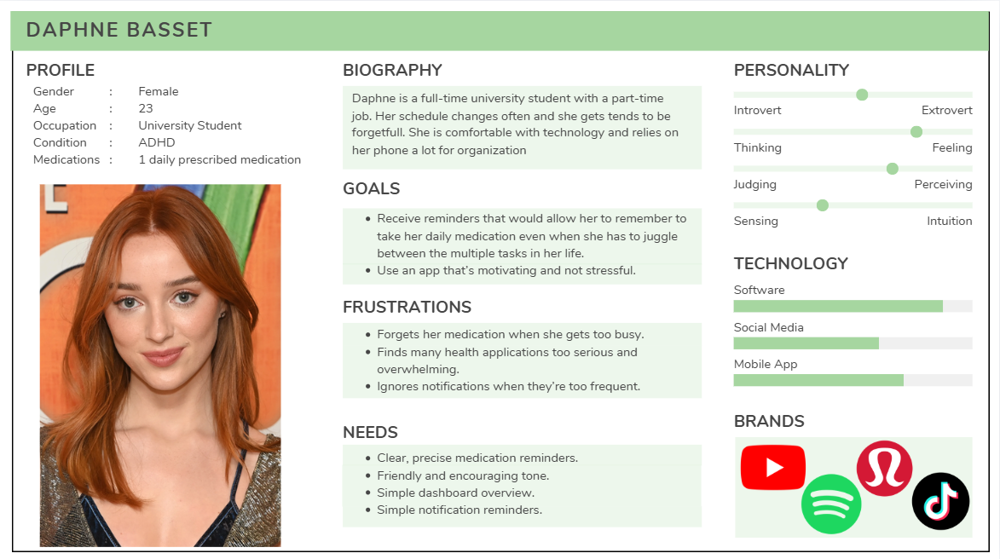
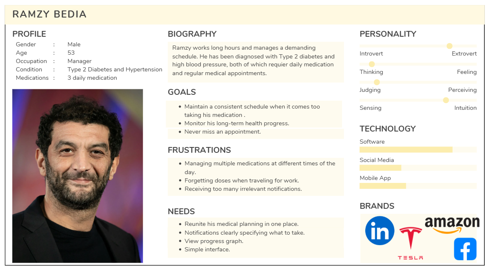
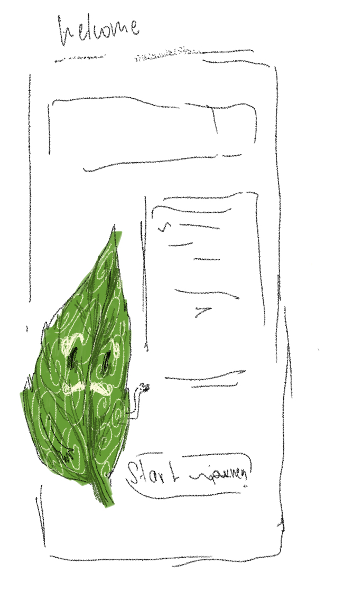
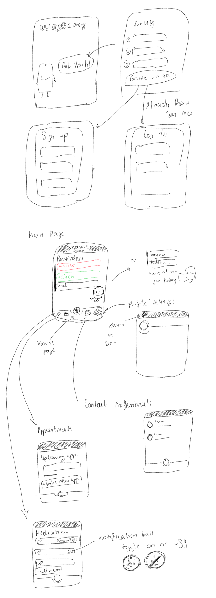
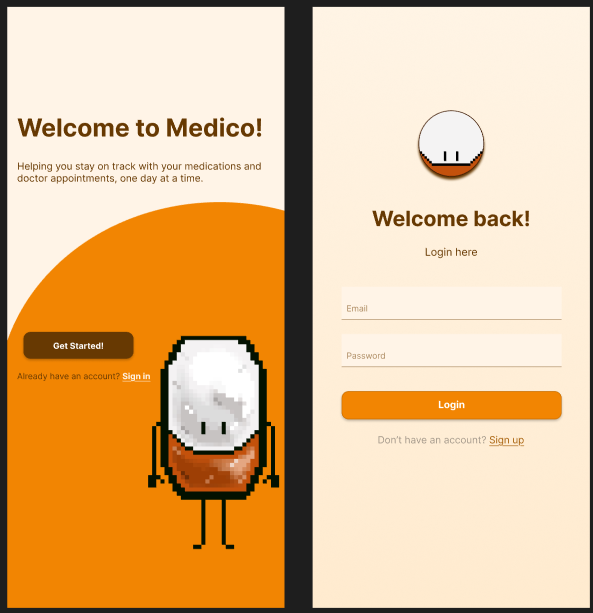
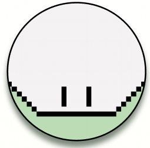
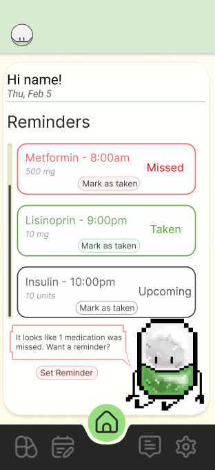
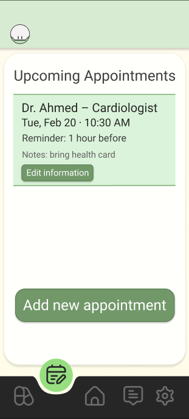
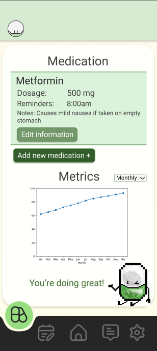
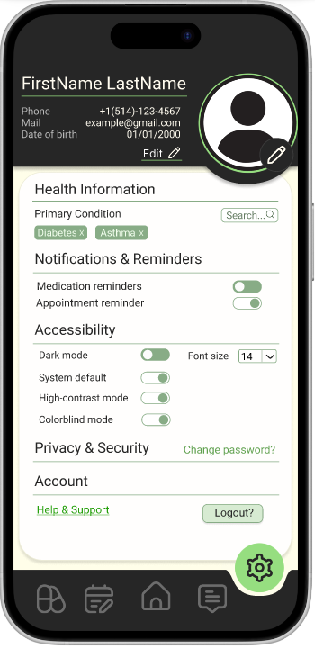

Medico – Chronic Health Companion App
1. Introduction
The purpose of Medico is to support individuals with chronic conditions that require regular medication intake and recurring medical appointments, such as diabetes, asthma, cardiovascular conditions, or long-term mental health treatment.
People with chronic illnesses often take medications daily. Missing doses or appointments can have serious consequences. Although there are existing health-related applications, many of them tend to be too complex, overwhelming, or impersonal. Medico aims to be simple, friendly, intuitive, and supportive.
This is why I opted for having a mascot whose goal is to interact with the user and share reminders related to medications and appointments. This design choice was made without taking away from the main purpose of the app. The mascot is not the central feature of the application, but rather a supporting element that helps make the experience feel less intimidating and overly serious.
Often, people enjoy gamifying their daily tasks, and when something feels too serious or rigid, they may avoid it altogether. In the context of health, this avoidance can lead to demotivation and eventually to users abandoning the app. Medico aims to deliver real and useful help in a fun and encouraging manner, motivating users rather than making them feel like they are completing yet another boring or stressful task.
1.2. Problem Statement
Medico aims to support users in remembering their medications and managing their health routines. Managing multiple medications, or keeping track with multiple appointments can easily become confusing and discouraging, which may lead users to stop keeping track altogether.
In addition, many existing health applications lack a human and encouraging tone, which can make the experience feel cold or overwhelming. Medico aims to solve this problem by providing clear reminders while maintaining a friendly, supportive, and motivating approach.
2. User Research and Methodology
2.1. Target Users
This application is designed to accompany users of different age groups in their daily lives by offering guidance and support.
This application aims to target the following user groups:
- Teenagers or adults with chronic illnesses
- Users who need to keep up with daily medications
- Users managing regular doctor appointments
Overall, it targets users who have a busy schedule, perhaps older adults or teenagers, that wish to start planning their health routines and need a simple, intuitive, and encouraging application to support them in doing so.
The app aims to be accessible to users who may not be very comfortable with technology and therefore require a simpler and clear user interface. Medico provides the necessary features in the least confusing way possible, prioritizing clarity and ease of use.
2.2. Survey
In order to properly design the application, a user research survey was conducted to collect insights on how the application should be structured and which features would be most useful.
The survey was anonymous and online, lasting approximately 5–10 minutes and conducted using Google Forms. It targeted individuals living with chronic health conditions or those close to someone managing such conditions.
Check out the survey here: https://forms.gle/4YT36XMRDRWoSY7MA
The survey contained the following sections:
- Background Information
- Current Behavior
- User Needs
2.3. Results & Key Findings
Unfortunately, the survey did not receive a large number of responses (only 7), resulting in a limited sample size (the survey was shared on Instagram and Reddit). However, a few relevant trends were still observed.
Background Information Section:
This section aims to collect the repondent's age range, health condition, and number of medications taken regularly.
Firstly, the demographic of the respondents had a vast majority of young adults (18-24 years old), with only 22% being aged 25-34. This is mainly due to the fact that the survey was shared among friends, and did not unfortunately reach a wider audience. This is a limitation of the survey, and it would have been ideal to have a more balanced age distribution to better understand the needs of different user groups.
There was a variety of health conditions among respondents. The answers were the following:
- Diabetes
- Celiac disease
- ADHD
- Vitiligo, HSV2, ADHD, transgender
- HSV2
- Transgender
- Leg Condition (wasn't specified)
The majority of respondens take 1-2 medications regularly, with only 11% taking 5+.
Current Behavior Section:
This section explores how users currently remember their medications, how often they forget doses, and how they track doctor appointments.
The majority of respondents rely on their memory to remember their medications, while some use alarms on phones, written notes, pill organizers or they simply forget to take them. This indicates the possible need for a reliable and consistent reminder system, which is the main goals of Medico.
When asked "How do you currently keep track of doctor appointments?", the majority responded that they rely on calendar apps, memory, or that they struggle to remember.
User Needs Section:
This section identifies difficulties in managing medications, frustrations with current health apps, desired features, and the importance of tone, simplicity, and personalization.
When asked about what they find the most challenging about managing medications, most users voted that they struggle to stay motivated and consistent.
When asked about frustrations with current health apps, users expressed that they find them to be too complicated or that they simply didn't use any health apps.
When asked about desired features, users expressed the importance of having a simple and intuitive interface, clear medication reminders, and a way to track their health progress over time.
When asked about how important would a friensly and encouran=ging tone be to the user for a health app, 60% picked Somewhat importnat, with 30% picking very important and 10% picking not important.
Lastly, the last question asked was "What would make a medication reminder app truly helpful for you?" and the answers were the following:
- Notifications
- If it shows a yearly graph(improved health) real metrics to keep track of improvement
- Lock my screen with a big message have you taken your meds at the hours I appointe the app to remind me
- NFT tag connection from app to pill organizer that automatically clicks meds taken and what time
- Easy to use
Key Findings:
Overall, most respondents expressed the importance of having a clear and simple, yet personalized health application. They highlighted how impotrnat relevant and precise notifications are, specifically indicating which medication to take at the requested time. In addition, one comment that influenced the design of the application was the suggestion of having a yearly graph to track health progress. This idea was incorporated into the wireframe designs.
Users do not appreciate being overwhelmed with notifications. Excessive notifications often lose their meaning or get ignored altogether. A simple and direct notification, containing only the necessary information and delivered at the right time, is far more effective.
3. User Personas
Chronic health conditions vary greatly, and users therefore have diverse needs. Despite these differences, all users must be supported within a single application. In order to provide the best possible user experience, to a broad range of users, it is crucial to understand the different user needs and requirements. To do so, two personas were created based on responses collected from the survey. Creating these personas helps keep user needs in mind throughout the design process and ensures that design decisions remain user-centered.
The user needs and requirements captured by the personas are the following:
- Provide clear medication reminders with notifications containing only relevant information
- Offer an easy and quick way for users to log their medication intake
- Offer a way to track and visualize health progress over time
- Offer an easy and quick way to keep track of their upcoming appointments
- Maintain a friendly and encouraging tone without compromising the seriousness of the app’s purpose
- Ensure accessibility through readable fonts and a simple, intuitive interface
Persona 1 represents a younger user who is tech-savvy but struggles with consistency in medication intake due to a busy lifestyle.
Persona 2 represents an older adult who has a heavy schedule and requires a straightforward and easy-to-navigate application, that would indicate to him his progress and motivate him to stay consistent with his health routine.
3.1. User Journey Mapping
To properly proceed with the design of the application, various use cases were identified. Two User journey Maps were created to visualize how the personas would interact with Medico throughout their daily routines.
4. Design Process
Designing an application involves multiple steps, one of which is finding visual inspiration.4.1. Sketches
The design process began with simple sketches that outlined the overall structure and functionality of the app. These sketches included the following pages:
- Welcome page
- Survey
- Login / Sign-up
- Home page
- Settings
- Medications page
- Appointments page
- Messaging page
Originally, the mascot was designed as a leaf. 
However, a pill was found to be more intuitive and directly related to the purpose of the application.
The sketches were intentionally kept simple and rough to focus on the overall concept and structure of the app rather than on visual details. This approach allows for quick iterations and adjustments based on feedback before moving into more detailed designs.
4.2. Wireframes
Once satisfied with the overall concept, low-fidelity wireframes were created. These wireframes helped define the layout and features of each page while keeping the design simple before moving into the high-fidelity UI/UX design phase in Figma.

4.3. Storyboard
A storyboard was created to illustrate how the application would be used in a real-life context. It captures one of the many possible scenarios in which Medico would support a user throughout their day.

4.4. The Mascot
The inspiration behind the mascot comes from personal experience with applications such as Duolingo. Duolingo’s mascot plays a major role in making the app engaging and memorable. While Medico does not aim to replicate Duolingo’s frequent notification style, the idea of a friendly mascot that encourages users was a strong source of inspiration.
4.5. Color Palette
Initially, an orange color palette was explored to create a warm and welcoming feeling. However, it quickly began to resemble a pet-related application.
For this reason, a green color palette was chosen instead.
Green is commonly associated with health, balance, and calmness. It helps reinforce the app’s purpose while making users feel at ease.
4.6. Typography
Medico is meant to be intuitive, clear, and visually consistent. For this reason, a simple and readable font was chosen: Roboto. Roboto is commonly used on Android devices, is highly legible, and does not distract from the content.
4.7. Icons and Illustrations
Icons were selected from Flaticon (https://www.flaticon.com ), and used under their free license with attribution. I ensured that a consistent icon set was used throughout the application. Icons with thicker lines were chosen to match the visual style of the mascot that has thick bold lines.
The mascot was hand-drawn by myself using Resprite, a pixel art software. The design was kept minimalistic to avoid overwhelming users and lose the meaning it's supposed to convey which is friendliness and warmth.
4.8. Naming & Logo
The name of the app and the mascot were intentionally kept the same to reinforce brand recognition. The logo is simply the face of the mascot.
The name Medico was chosen because it is short, catchy, and directly related to health, without sounding overly serious or intimidating.
5. Prototype
The final interactive prototype was created in Figma. It demonstrates the various interactions within the app and showcases its main features.
Try it yourself:
6. Final Design
The application opens with a welcome page where the mascot, Medico, greets the user and briefly explains the app’s purpose.
Once logged in, the user arrives on the home page, which presents a daily dashboard showing the scheduled medications for the day and an encouraging messages from Medico. The home page serves as a quick overview of the user’s daily health routine and provides motivation to stay on track.
The Messages page allows users to communicate with healthcare professionals for guidance or support.
The Appointments page displays upcoming appointments, allows users to set reminders, add events to their calendar, and create new appointments.
The Medications page lists all current medications along with dosage instructions, scheduled times, and optional notes. A progress dashboard at the bottom displays monthly or yearly health metrics.
Finally, the Settings page allows users to manage personal information, notification preferences, and health-related settings.
7. Usability Testing
(To be completed)
8. Reflection
While Medico successfully addresses medication and appointment tracking, future iterations could explore caregiver integration and professional dashboards. Conducting surveys with healthcare professionals would provide valuable insight into their needs and expectations.
Accessibility remains a core priority. Future improvements include dark mode, light mode, high-contrast mode, colorblind options, adjustable font sizes, and full screen reader compatibility.
9. Conclusion
This research allowed for the design of a health companion application that supports users managing chronic conditions in a fun, intuitive, and motivating manner. Medico uses a friendly mascot to deliver personalized reminders while avoiding unnecessary complexity or information overload.
By focusing on encouragement, simplicity, and personalization, Medico aims to support users in maintaining consistency and motivation in their daily health routines.